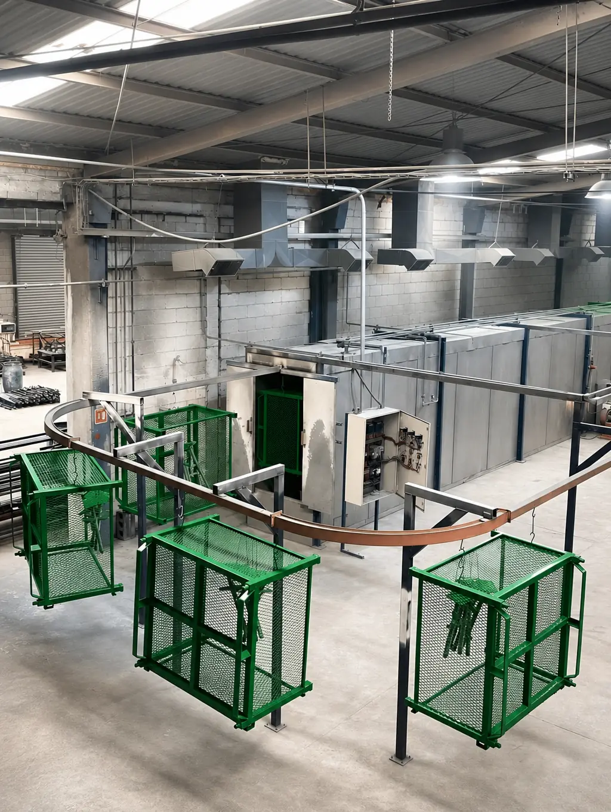

Una línea de pintura electrostática es el conjunto de equipos que limpia el metal, aplica el polvo y lo cura en horno. Instalar la tuya conviene cuando tu volumen es alto y estable; en la mayoría de los demás casos, maquilar resulta más práctico y menos riesgoso.
Mucha gente llega a este tema buscando equipo: cabina, horno o "máquina de pintura electrostática". Antes de comprar, conviene entender qué incluye una línea completa y qué exige operarla bien.
En Steel Paint somos maquiladores: no vendemos equipo ni pintura, procesamos las piezas de otras empresas. Por eso te contamos ambos lados con claridad. Si el modelo de servicio es nuevo para ti, empieza por qué es la maquila de pintura en polvo.
Qué incluye una línea de pintura electrostática
Una línea completa no es solo una pistola. Estos son sus componentes principales y para qué sirve cada uno:
| Componente | Para qué sirve |
|---|---|
| Pretratamiento | Limpia y prepara el metal |
| Secado | Quita la humedad antes de pintar |
| Cabina y pistolas | Aplican y recuperan el polvo |
| Horno de curado | Funde y cura la resina |
| Transportador | Mueve las piezas entre etapas |
El pretratamiento es el eslabón que más se subestima: sin él, el acabado dura poco. Lo explicamos en la guía de preparación de superficie para powder coating.
Lo que no aparece en la cotización del equipo
El precio de los equipos es solo una parte. Lo que suele sorprender a quien instala su línea es todo lo que la rodea:
- Espacio e instalaciones: la línea ocupa un área considerable y requiere servicios como energía, aire comprimido limpio y seco, extracción y, según el horno, gas
- Manejo del pretratamiento: las soluciones químicas y el agua de enjuague deben controlarse y desecharse según la normativa que aplique a tu planta
- Personal capacitado: operar pistolas, ajustar parámetros y detectar defectos es un oficio que se aprende con tiempo
- Mantenimiento y refacciones: hornos, bombas, filtros y pistolas se desgastan y deben mantenerse para que el acabado no varíe
- Curva de aprendizaje: los primeros lotes suelen traer retrabajos mientras se afinan parámetros
Estos costos pesan más cuando el equipo trabaja a medias. Un volumen que fluctúa deja la línea parada gran parte del tiempo, pero los gastos fijos siguen corriendo.
Cuándo conviene instalar tu propia línea
Tiene sentido si tu volumen es alto y constante todo el año, si tus piezas son parecidas entre sí (para no cambiar el proceso a cada rato) y si cuentas con espacio, presupuesto y gente para operarla. También cuando el pintado es parte central de tu producto y quieres control total del calendario.
Aun así, conviene hacer la cuenta completa, incluyendo operación y mantenimiento, y conocer también los límites del proceso en ventajas y desventajas de la pintura electrostática. Para saber cómo se calcula el costo por pieza del lado de la maquila y compararlo, revisa cuánto cuesta la maquila de pintura en polvo en México.
Cuándo conviene maquilar
La maquila gana cuando tu demanda es variable, cuando manejas piezas de distintos tamaños y metales, o cuando no quieres que el pintado compita por espacio y capital con tu producción principal. También si necesitas empezar pronto: no esperas a instalar y calibrar un equipo.
En Steel Paint recibimos tus piezas y las procesamos con inspección, pretratamiento, aplicación electrostática, horneado y control de calidad dimensional. Nuestra línea automatizada de 95 metros procesa hasta 2,300 piezas al día, con horno continuo para series y horno batch para lotes pequeños o piezas especiales. Atendemos piezas ferrosas y no ferrosas, con entregas desde 24 horas en proyectos urgentes.
Cómo es maquilar en la práctica: de tus piezas a la entrega
Si nunca has maquilado, el proceso es más sencillo de lo que parece. En términos generales funciona así:
- Compartes planos o medidas, tipo de metal, cantidad y especificación de color y acabado, y recibes una cotización.
- Envías las piezas; en Steel Paint las recibimos e inspeccionamos antes de procesarlas.
- Se pretratan, se aplica el polvo con carga electrostática y se hornean.
- Hacemos el control de calidad dimensional y se entregan las piezas.
Lo que no tienes que hacer es comprar equipo, contratar operadores ni resolver el manejo de químicos y residuos. Los tiempos de cada proyecto dependen del tipo de pieza y del volumen, por lo que conviene hablarlos desde la cotización.
Escenarios típicos: línea propia o maquila
Esta tabla resume las situaciones más comunes y lo que suele convenir en cada una:
| Situación | Suele convenir |
|---|---|
| Volumen alto y constante todo el año | Evaluar línea propia |
| Volumen que cambia por temporada | Maquilar |
| Muchos colores en lotes chicos | Maquilar |
| Piezas de metales y tamaños variados | Maquilar |
| Proyecto nuevo, sin historial de volumen | Maquilar primero |
| Pintado central en tu producto, con espacio y equipo técnico | Evaluar línea propia |
Errores comunes al decidir entre instalar o maquilar
- Comparar solo el precio del equipo contra el precio por pieza de la maquila, sin sumar operación, mantenimiento, espacio y personal.
- Calcular el retorno con el volumen del mejor mes en lugar del promedio real del año.
- Subestimar el pretratamiento, que es la parte de la línea que más conocimiento exige y la que más condiciona la duración del acabado.
- Comprar equipo antes de definir qué piezas se van a pintar, con qué metales y en qué tamaños.
- Suponer que una línea propia ahorra por sí sola: si trabaja a medias, los costos fijos siguen corriendo.
- Ignorar lo que cuesta el espacio y el capital que se destinan al pintado y que podrían usarse en tu producción principal.
Seis preguntas para decidir entre línea propia y maquila
Responde estas preguntas con datos de tu operación, no con estimaciones optimistas:
- ¿Cuántas piezas pintas al mes y qué tanto cambia ese número de un mes a otro?
- ¿Tus piezas son de un solo metal y tamaño, o varían mucho?
- ¿Tienes espacio y servicios disponibles para pretratamiento, cabina y horno?
- ¿Hay personal capacitado, o tendrías que formarlo?
- ¿Cuánto cuesta hoy un retrabajo o un lote rechazado en tu planta?
- ¿Puedes esperar el tiempo de instalación y puesta a punto?
Si la mayoría de las respuestas apuntan a volumen variable, espacio limitado o poca experiencia, maquilar suele ser el camino. Si ya vas por esa vía, te servirá la guía de cómo elegir un maquilador de pintura en polvo en Monterrey.
Una opción intermedia: maquilar primero y decidir después
Muchas empresas que piensan en comprar equipo se benefician de maquilar durante un tiempo. Así obtienen datos reales de volumen, mezcla de piezas y calidad requerida, y toman la decisión con información en lugar de proyecciones. Si más adelante la línea propia se justifica, ya sabrás qué capacidad necesitas.
Si tu duda es entre polvo y líquida antes de montar cualquier equipo, revisa la comparativa de pintura en polvo vs líquida, y para ver el panorama completo de la tecnología, la guía de qué es la pintura electrostática.
Preguntas frecuentes sobre la línea de pintura electrostática
¿Qué incluye una línea de pintura electrostática?
Una línea completa suma pretratamiento del metal, un área de secado, una cabina con pistolas de aplicación y sistema de recuperación de polvo, un horno de curado y un transportador que mueve las piezas. El diseño cambia según el volumen y el tamaño de las piezas.
¿Cuánto cuesta instalar una línea de pintura en polvo?
No existe una cifra única: depende de la capacidad, el nivel de automatización, el tamaño de las piezas y la obra civil e instalaciones que requiera tu planta. Para compararla con maquilar, pide cotización de equipo con tus piezas y suma operación y mantenimiento.
¿Se puede aplicar pintura electrostática sin horno?
La pintura en polvo no: necesita horno para fundir y curar la resina. Algunas pinturas líquidas pueden secar sin horno, pero es otro sistema y otro acabado.
¿Cuándo conviene maquilar en lugar de comprar una línea?
Cuando tu volumen cambia de un mes a otro, no tienes espacio o personal especializado, o aún no sabes si tu demanda justifica la inversión. La maquila te da el proceso completo sin sumar equipo a tu planta.
¿Qué necesito para empezar a maquilar mis piezas?
Los planos o medidas de la pieza, el tipo de metal, la cantidad y la especificación de color y acabado. Con eso, un maquilador puede confirmar la factibilidad y cotizar tu proyecto.
Una regla para decidir: volumen, espacio y especialización
Instalar una línea tiene sentido cuando tu volumen es alto y estable, tienes el espacio y estás listo para operarla como un proceso más de tu planta. En cualquier otro caso, maquilar te evita compromisos fijos mientras tu operación crece. Si todavía dudas, empieza maquilando: lo que aprendas de tus propias piezas te dirá si el siguiente paso es tu propia línea.